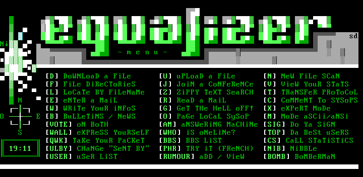
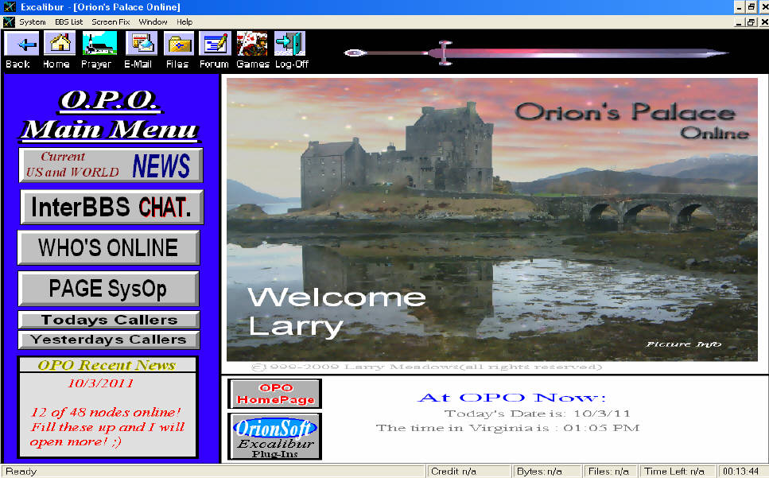
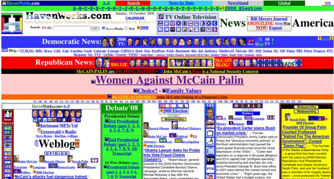
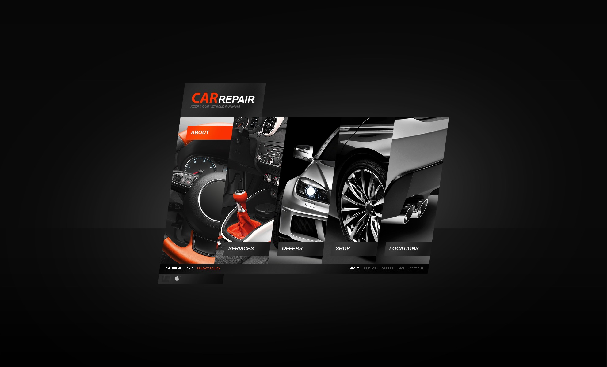
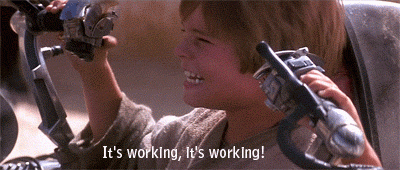
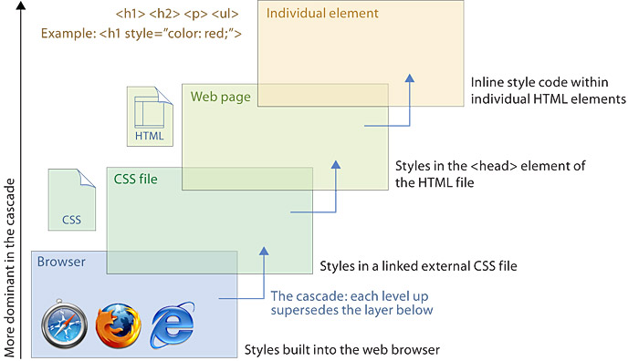
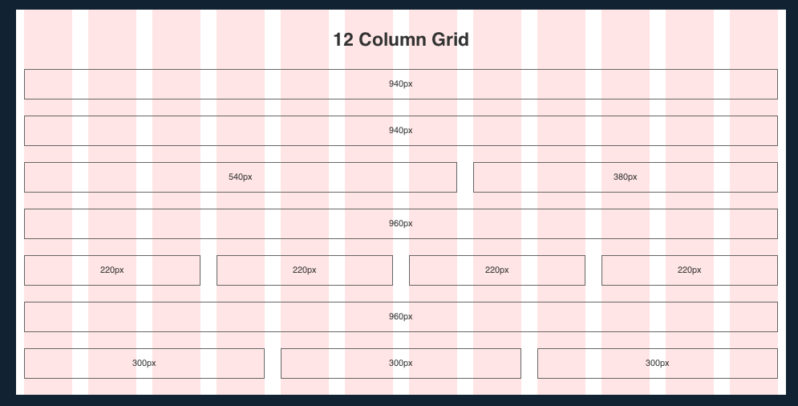
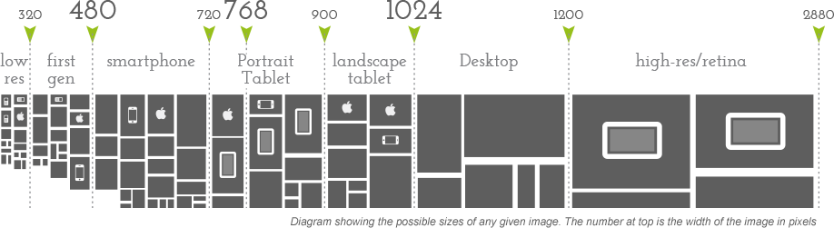

HTML / CSS
Donovan Tengblad
- Chef de projet web - Université Grenoble Alpes
- Mail : donovan.tengblad@u-grenoble3.fr
- Github : purplefish32
- Cours et exercices sur : github.com/purplefish32/slide-html-css
Wildcat BBS
Excalibur BBS
HTML/XHTML/DHTML
Flash
Flash - The end

Aujourdhui

Aujourdhui
HTML5, CSS3 Avancé
Séparer la structure du look
D'un côté le HTML
De l'autre le CSS
-
CSS Zen Garden : mezzoblue.com/zengarden/alldesigns
Un peu de concret
Faire son CV en HTML
Validation HTML
Un peu de concret
Valider le code HTML de son CV
Valid HTML
- 
HTML / CSS
Loin d'être une science exacte
- Navigateurs multiples
- Versions multiples des navigateurs
- Systèmes d'exploitation différents
- Politiques différentes
- Publiques différents
- Supports différents
- Hacks multiples et variés
- caniuse.com
Exemple de hack IE
css-tricks.com/how-to-create-an-ie-only-stylesheet
Cascading Style Sheet
Comprendre la partie cascade
Comprendre la spécificité

CSS : Le secret
Concevoir des sytèmes et pas des pages
Reset CSS
- Surcharge les styles par défaut des navigateurs
- Uniformisation entre les differents navigateurs
/* http://meyerweb.com/eric/tools/css/reset/
v2.0 | 20110126
License: none (public domain)
*/
html, body, div, span, applet, object, iframe, h1, h2, h3, h4, h5, h6, p blockquote, pre,
a, abbr, acronym, address, big, cite, code, del, dfn, em, img, ins, kbd, q, s, samp, small,
strike, strong, sub, sup, tt, var,b, u, i, center, dl, dt, dd, ol, ul, li, fieldset, form,
label, legend, table, caption, tbody, tfoot, thead, tr, th, td, article, aside, canvas,
details, embed, figure, figcaption, footer, header, hgroup, menu, nav, output, ruby,
section, summary, time, mark, audio, video {
margin: 0;
padding: 0;
border: 0;
font-size: 100%;
font: inherit;
vertical-align: baseline;
}
/* HTML5 display-role reset for older browsers */
article, aside, details, figcaption, figure, footer, header, hgroup, menu, nav, section {
display: block;
}
body { line-height: 1; }
ol, ul { list-style: none; }
blockquote, q { quotes: none; }
blockquote:before, blockquote:after,
q:before, q:after {
content: '';
content: none;
}
table {
border-collapse: collapse;
border-spacing: 0;
}
Layout : Fixed Grid
Layout : Fluid Grid
.col-1 {width: 8.33%;}
.col-2 {width: 16.66%;}
.col-3 {width: 25%;}
.col-4 {width: 33.33%;}
.col-5 {width: 41.66%;}
.col-6 {width: 50%;}
.col-7 {width: 58.33%;}
.col-8 {width: 66.66%;}
.col-9 {width: 75%;}
.col-10 {width: 83.33%;}
.col-11 {width: 91.66%;}
.col-12 {width: 100%;}
Base Typography
- Valeurs par défaut "pertinantes" de typographie
- 960 Grid System
Polices non standards
Components
- Valeurs par défaut "pertinantes" d'éléments génériques
- Formulaires
- Tableau
- Messages d'alertes
- Systèmes de navigation
- Bouttons
- Avatars
- ...
- Exemple de components pour téléphone mobile
Style du thème
- Surcharge les valeurs précédantes
- Style spécifique au thème
Organisation des fichiers CSS
- reset.css
- layout.css
- typography.css
- form.css
- table.css
- message.css
- button.css
- avatar.css
- ...
- style.css
OOCSS
- Eviter les IDs
- Ne jamis utiliser !important
- Eviter de dépendre d'un élément parent
- smashingmagazine.com/2011/12/an-introduction-to-object-oriented-css-oocss
- examples/oocss/bad-example/index.html
- examples/oocss/good-example/index.html
Un peu de concret
Faire les feuilles de style de son CV
Responsive design
Tailles des écrans
Media Queries
<style>
@media not|only mediatype and (mediafeature) {
CSS-Code;
}
</style>
<link rel="stylesheet" media="mediatype and|not|only (media feature)" href="mystylesheet.css">
// mediatype : Types de médias
//
// all Tout type de médias.
// print Imprimantes.
// screen Ecrans, tablets, smart-phones etc.
// speech Synthetiseurs vocaux.
// mediafeature : propriété du média
// max-width Largeur maximale
// orientation Orientation d'un écran
// http://www.w3schools.com/cssref/css3_pr_mediaquery.asp
Breakpoints
Un peu de concret
Rendre son CV responsive
Frameworks HTML/CSS
Twitter Bootstrap
- Icons
- Menus
- Fil d'ariane
- Pagination
- Labels
- Badges
- Alerts
- Onglets
- Vignettes
- Barres de progression
- Tableaux
- ...
Un peu de concret
Faire un site avec Bootstrap
6 pages minimum
- Page d'accueil
- Page "à propos"
- Page de contact
- Fil de billets de blog (liste news par exemple)
- Billet de blog (page de news par exemple)
- Page d'erreur 404
La suite
- Javascript
- SAS, LESS
- SEO
- Mimification / compression
- Accessibilité : WAG
- Bower
- Outils de build : Grunt, Gulp